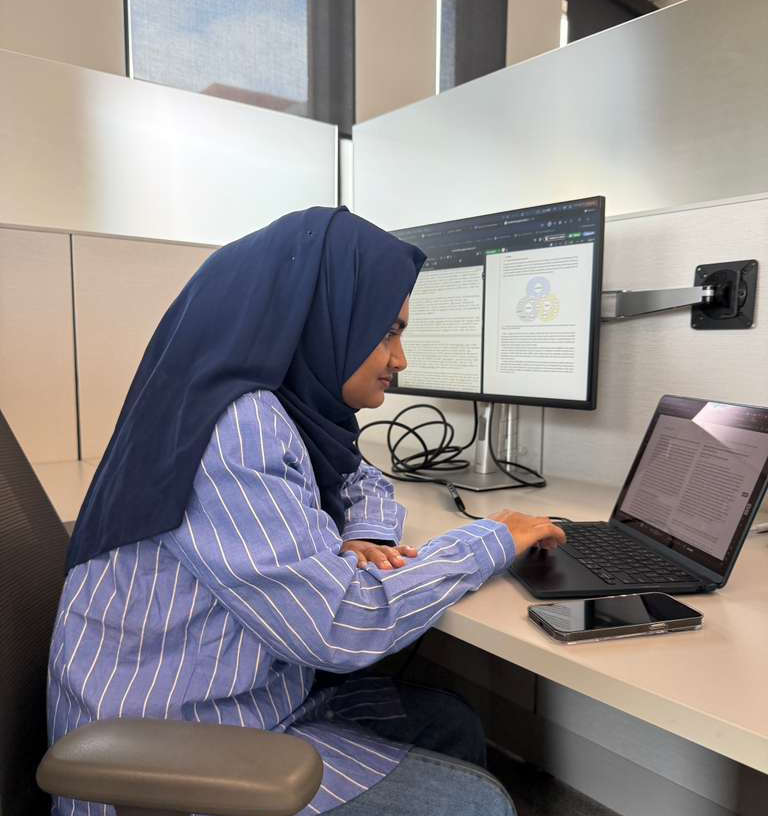
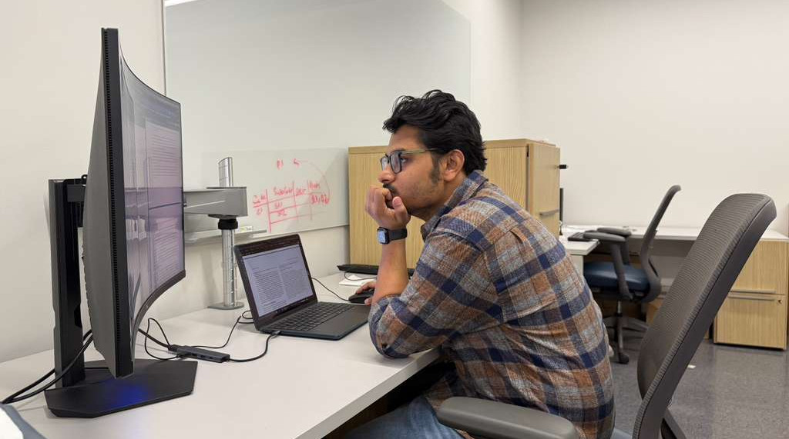
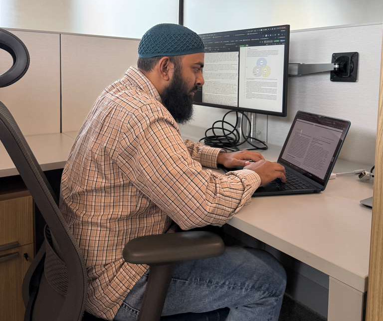

Welcome to the Accessibility and Privacy Enhancing EXperience (APEX) Lab

UT San Antonio campus

Graduate students

Graduate students

Graduate students
The Accessibility and Privacy Enhancing EXperience (APEX) Lab is led by Dr. Taslima Akter in the College of AI, Cyber, and Computing at the University of Texas at San Antonio. Our research focuses on advancing privacy and accessibility for marginalized populations, with a particular focus on people with disabilities. To learn more about our work, explore our recent publications. Visit the People page to meet the team driving our research forward.
Recent News

Paper on accessibility of collaborative technologies is accepted, presented and published at ASSETS 2025

We have evaluated the accessibility of 30 widely used collaborative technologies. Read the paper: Beyond Accessibility (ASSETS 2025).
Abhinaya Guduru received the Distinguished Research Award at the 2025 UTSA Excellence in Sciences Awards

Undergraduate student Abhinaya Guduru presented a poster on financial abuse experienced by older adults at the 2025 Undergraduate Research & Creative Inquiry Showcase and received the Distinguished Research Award.